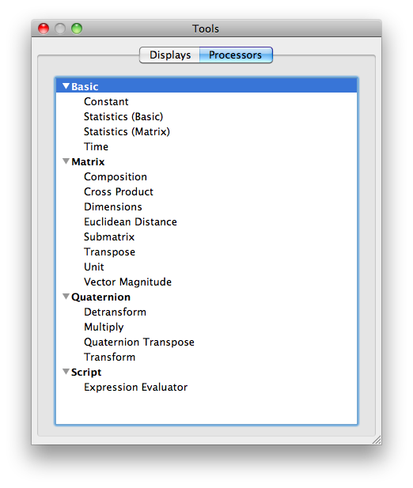
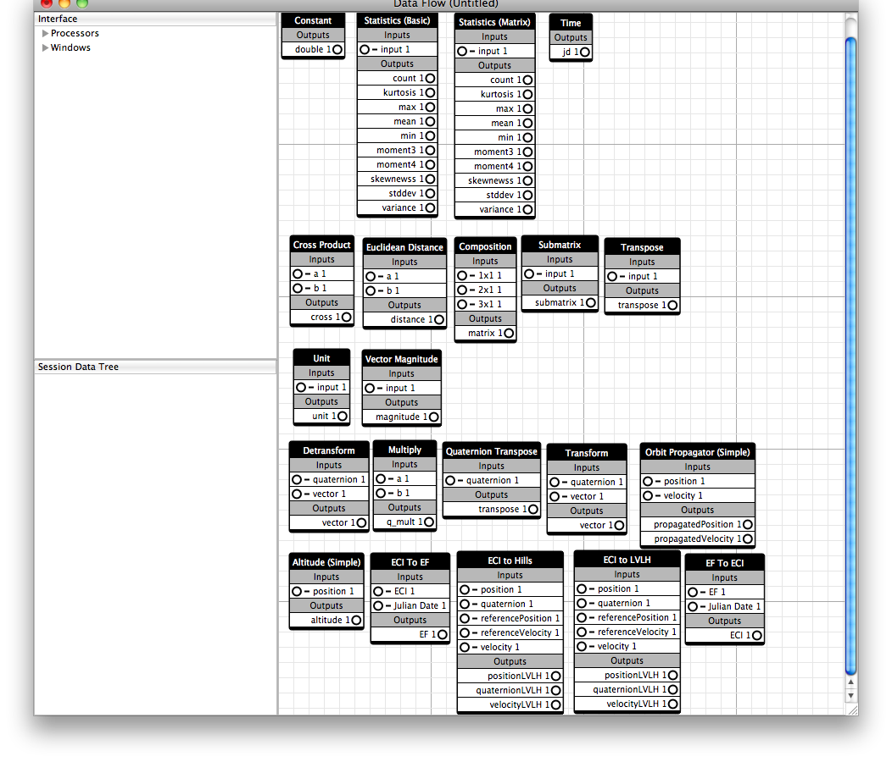

Processor plugins allows you to process raw data in a variety of ways. VisualCommander comes with a set of general-purpose but very useful processor plugins. This page explains how to use the builtin display plugins.
To see the list of built-in processor plugins from Visual Commander, go to Window->Tools, or hit CMD+R. The following window of "Tools" appears.
The processor plugins or "Tools" are summarized below by category.
You drag processors onto the data flow page and make connections.
